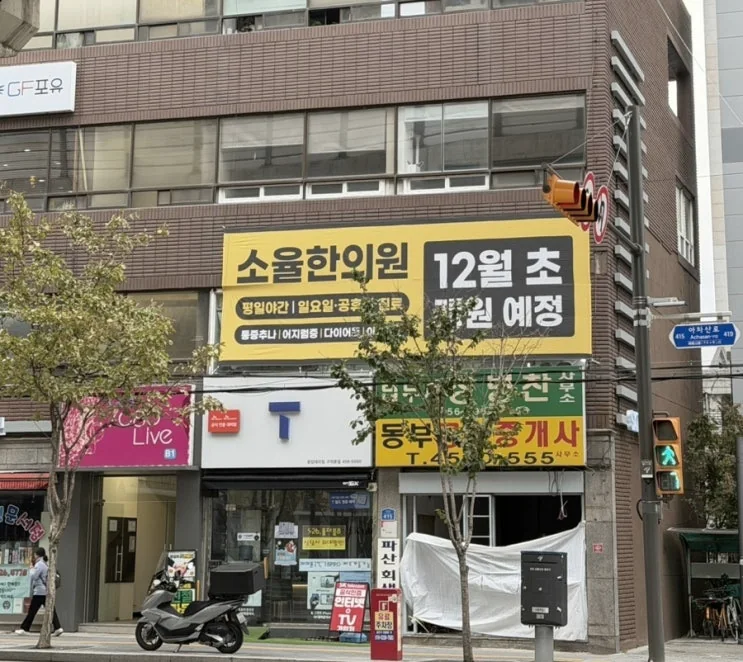

몸의 근본을 살피고 나다운 리듬을 찾습니다

소율은 몸의 근본을 살피고, 나다운 리듬을 찾는다는 뜻입니다.
같은 증상이라도 시작된 계기와 몸의 상태는 모두 다릅니다. 언제 시작됐는지, 어떤 때 심해지는지, 잠과 소화는 어떤지. 그동안 몸이 보내온 신호를 하나씩 살핍니다.
- 진료시간
평일 09:30 – 19:30
토·일·공휴일 09:30 – 14:00
진료시간 자세히
평일 점심 14:00 – 15:00
수요일 휴진- 오시는 길
구의역 2번 출구에서 걸어서 2분
횡단보도 바로 앞 장안빌딩 2층,
약도와 길찾기
구의역 이스트폴 맞은편입니다.- 전화
-
궁금한 점은 편하게 전화 주세요.
예약과 첫 방문 안내
진료 안내
치료 방법과 첫 방문-
귀 질환 클리닉
자세히 보기귀가 울리고, 먹먹하고, 어지러울 때
이명, 난청, 어지럼증, 귀 먹먹함
검사에서는 괜찮다는데 여전히 불편한 귀. 귀의 증상과 함께 잠과 피로, 목·어깨의 긴장까지 살피고, 이비인후과 검사 결과를 참고해 치료를 계획합니다.
-
척추·통증 클리닉
자세히 보기목·어깨·허리·무릎이 아플 때
목·어깨, 허리·골반, 무릎·관절, 추나요법
아픈 자리만이 아니라 자세와 생활, 몸 전체의 균형을 함께 봅니다. 침과 약침, 침도, 추나요법으로 진료합니다.
-
비만·체형 클리닉
자세히 보기체중과 몸의 균형을 되찾고 싶을 때
체중 관리, 식습관, 체형의 균형
체중이 늘어 온 과정과 생활을 먼저 듣습니다. 몸에 맞는 한약과 침 치료, 식사·생활 상담을 함께 합니다.
소율한의원 대표원장 · 한의사
오지현
마음까지 살피는 진료,
끝까지 책임지겠습니다
한의사로 8년 가까이 진료하며, 이명과 난청, 어지럼증처럼 겉으로 잘 보이지 않는 증상으로 오래 불편을 겪어 온 분들을 많이 만났습니다. 언젠가 제 공간을 만든다면 이런 분들의 이야기를 충분히 들어 드릴 수 있는 곳을 만들고 싶었습니다.
- 동의대학교 한의과대학 졸업
- 전 365청원한의원 원장
- 심리상담사 1급
- 대한약침학회 정회원
- 대한침도의학회 정규과정 수료
- 한방비만치료 인증한의사
소율에서 지키는 것
충분히 듣습니다
언제 시작됐는지, 어떤 상황에서 심해지는지, 잠과 소화, 컨디션은 어떤지. 서두르지 않고 여쭙고, 검사 결과와 함께 그동안 몸이 보내온 신호를 살핍니다.
제대로 설명합니다
무조건 좋아질 거라는 말 대신, 지금 확인되는 것은 무엇인지, 왜 이런 증상이 나타났다고 보는지, 앞으로 어떤 방향으로 치료해 나갈지 이해하실 수 있게 말씀드립니다.
차분하게 이어 갑니다
필요한 치료를 필요한 만큼, 경과를 함께 확인하며 이어 갑니다. 다른 진료가 먼저라면 그렇게 권하고, 원하지 않는 치료는 권하지 않습니다.
진료실을 나서실 때 ‘이제 어떻게 해 나가야 할지 알 것 같다’는 마음이 드셨으면 합니다.
문을 열기까지
소율 이야기 더 보기
장안빌딩 2층2026년 11월, 개원 안내 현수막이 걸렸습니다
구의역 2번 출구 앞, 횡단보도 바로 앞 건물 2층에 소율한의원을 만들고 있습니다.
뒤로는 주택가가, 앞으로는 회사가 모인 길입니다. 동네 분들과 근처에서 일하는 분들 모두 편하게 들르실 수 있는 곳이 되었으면 합니다. 편안하게 기다리는 대기실, 충분히 이야기를 나누는 진료실, 편하게 치료받는 공간을 하나씩 채워 가고 있습니다.
개원일기
자주 묻는 질문
주말과 공휴일에도 진료하나요?
네. 토요일·일요일과 공휴일에는 오전 9시 30분부터 오후 2시까지 점심시간 없이 진료합니다. 매주 수요일은 휴진입니다.
예약 없이 방문해도 되나요?
예약 없이 오셔도 진료받으실 수 있습니다. 다만 처음 오실 때는 이야기를 충분히 듣느라 시간이 조금 더 걸리니, 오시기 전에 예약해 주시면 기다림을 줄일 수 있습니다.
구의역에서 어떻게 가나요?
2호선 구의역 2번 출구로 나와 강변역 방향으로 약 150m, 걸어서 2분쯤 오시면 횡단보도 바로 앞에 장안빌딩이 있습니다. 2층 202호입니다. 구의역 이스트폴 쪽에서는 그 횡단보도만 건너면 바로 앞입니다.
오시는 길 자세히 보기
주차할 수 있나요?
건물 안에는 주차할 수 없습니다. 차로 오실 때는 걸어서 3분 거리의 구의1동 공영주차장(자양로18길 78)을 이용해 주세요. 주차 요금은 소율한의원에서 지원해 드리며, 자세한 방법은 방문하실 때 안내해 드립니다.
엘리베이터가 있나요?
아쉽게도 건물에 엘리베이터가 없습니다. 1층 입구에서 계단으로 한 층 올라오시면 2층입니다. 계단을 오르기 어려우신 분은 오시기 전에 전화로 알려 주세요.
어떤 증상을 진료하나요?
목·어깨·허리·무릎 같은 척추와 관절의 통증, 이명·난청·어지럼증 같은 귀 질환, 체중과 체형 관리를 중심으로 진료합니다. 그 밖의 증상도 편하게 문의해 주세요.
진료 안내 보기
건강보험이 적용되나요?
침·뜸·부항 등 기본 한방 치료와 근골격계 질환의 추나요법은 건강보험이 적용됩니다. 약침과 한약 등 일부 치료는 비급여이며, 비용은 진료 전에 미리 안내해 드립니다.
비용 안내 보기
오시는 길
구의역 2번 출구로 나와 강변역 방향으로 걷다 보면 횡단보도 바로 앞에 장안빌딩이 있습니다. 2층으로 올라오세요. 구의역 이스트폴에서는 그 횡단보도만 건너면 됩니다.
서울특별시 광진구 아차산로 415장안빌딩 2층 202호
건물 안에는 주차할 수 없고 엘리베이터가 없습니다. 차로 오시면 걸어서 3분 거리의 구의1동 공영주차장 요금을 지원해 드립니다.
약도는 이해를 돕기 위한 그림으로, 실제 거리·방향과 조금 다를 수 있습니다.
궁금한 점은 편하게 물어봐 주세요
진료시간 안에는 전화로 바로 안내해 드립니다.